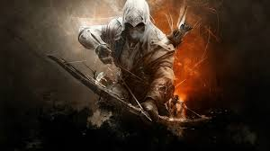
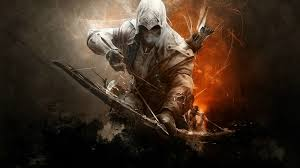
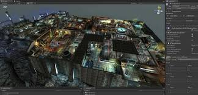
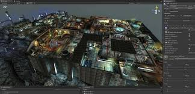
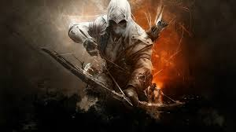
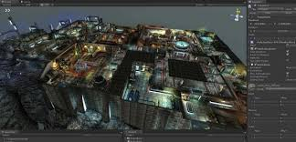

 

What is Graphic Designing? Graphic design is a craft where professionals create visual content to communicate messages. By applying visual hierarchy and page layout techniques, designers use typography and pictures to meet users' specific needs and focus on the logic of displaying elements in interactive designs, to optimize the user experience.
Graphic design is the art, profession and academic discipline whose activity consists in projecting visual communications intended to transmit specific messages to social groups, with specific objectives. Therefore, it is an interdisciplinary branch of design whose foundations and objectives revolve around the definition of problems and the determination of objectives for decision-making, through creativity, innovation and lateral thinking along with digital tools, transforming them for proper interpretation. This activity helps in the optimization of graphic communications (see also communication design). It is also known as visual communication design, visual design or editorial design.
There are different types of Graphic Designing;

